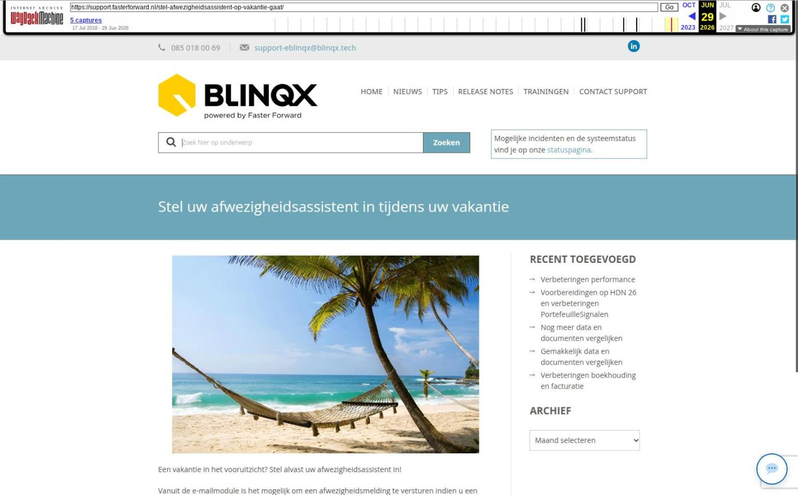

Verbeteringen ADN inbox en Uwkluis en meer

Tekstinhoud
Op dinsdag 6 augustus zijn Elements en eBlinqx weer verbeterd en uitgebreid met nieuwe features. Deze release bevat onder andere verbeteringen Uwkluis, optionele stukken uitsluiten en verbeteringen ADN inbox.
Verbeteringen onder de motorkap
Verbeteringen Uwkluis
Documenten synchroniseren verbeterd
Actueel polisblad getoond
Bestaande ondertekenverzoeken en Finly formulieren in Uwkluis
Zoekfilter verzekeringen
Optionele stukken geïntegreerd
Verbeteringen ADN inbox
Polis niet dubbel geprolongeerd
Indeling ADN inbox
Veld in filter toegevoegd
Omschrijving schademelding in hoover
Uitbreidingen API
Document toevoegen onder schademelding
Volledige voornamen ophalen
Levens- en inkomensverzekering afhandelen als serviceprovider
Nieuwe dekkingen volgens SIVI update
Overige verbeteringen
Verbeteringen onder de motorkap
De softwaretechnieken van Elements en eBlinqx zijn weer verder vernieuwd. Elements en eBlinqx is compatible gemaakt met PHP 8.3. Ook zijn we overgegaan van Vue 2 naar Vue 3. Ondanks dat je hier weinig van merkt, is deze vernieuwing erg belangrijk.
Hierdoor kunnen we namelijk nieuwe innovaties blijven implementeren, omdat we gebruikmaken van de nieuwste software. Bovendien blijft de veiligheid gewaarborgd. Dit geldt zowel voor Elements en eBlinqx als voor alle koppelingen en exports, zoals klantportalen, adviespakketten, Excel en verbindingen met geldverstrekkers en verzekeraars.
Visueel zijn er wat veranderingen, bijvoorbeeld de iconen in de e-mailmodule en in het navigatie-menu. De werking van Elements en eBlinqx blijft verder hetzelfde.
Verbeteringen Uwkluis
Documenten synchroniseren verbeterd
Vanaf nu is het mogelijk om in Uwkluis onder een document verzoek bepaalde type beveiligde documenten te uploaden. Het gaat dan bijvoorbeeld om documenten die door de UWV beveiligd zijn. Deze worden vervolgens samengevoegd en gesynchroniseerd naar Elements of eBlinqx. Zo komen de documenten onder het betreffende stuk te staan. Documenten die met een wachtwoord beveiligd kan je niet uploaden.
Actueel polisblad getoond
Wanneer er via Aplaza een nieuw polisblad binnenkomt dan wordt vanaf nu automatisch het oude polisblad op niet publiek gezet. Op deze manier wordt het actuele polisblad getoond in Uwkluis.
Bestaande ondertekenverzoeken en Finly formulieren in Uwkluis
De al aanwezige ondertekenverzoeken en Finly formulieren in het klantdossier worden nu naar een nieuwe Uwkluis gesynchroniseerd na activeren. Voorheen moest na het activeren van Uwkluis nog op de knop 'Synchroniseer met Uwkluis' geklikt worden om de formulieren en ondertekenenverzoeken in Uwkluis te zien. Dit is niet meer nodig.
Zoekfilter verzekeringen
Op de pagina Verzekeringen is nu een zoekfilter aanwezig, zodat de klant gemakkelijk de juiste verzekering erbij kan zoeken.
Optionele stukken geïntegreerd
Geldverstrekkers kunnen optionele stukken opvragen. In de stukkenlijst is het nu zichtbaar dat het een optioneel stuk betreft. Daarnaast houdt de tag 'openstaande stukken' rekening met de optionele stukken. Ook reageert de statusbalk in de productkaart en Uwkluis hierop. Op deze manier wordt er correct aangegeven of er nog stukken openstaan.
Verbeteringen ADN inbox
Polis niet dubbel geprolongeerd
We merken dat maatschappijen regelmatig meerdere prolongaties van dezelfde polis in dezelfde periode sturen. Vanaf nu wordt, als je werkt met ADN 3.0 en mutatievoorstellen, het in de batch direct zichtbaar als een polis reeds is geprolongeerd voor de betreffende periode. Er komt dan een rood icoon te staan in de kolom Boeking en de regel is grijs. Deze dubbele post wordt niet financieel verwerkt en de productkaart wordt niet aangepast. Zo wordt voorkomen dat er dubbele prolongaties inclusief boekingen in het systeem komen te staan.
Indeling ADN inbox
De indeling ADN inbox, voor ADN 3.0, is visueel verbeterd. Zo kan je de filters inklappen en staan de actieknoppen naast elkaar. Op deze manier krijg je meer posten op één scherm en hoef je door minder pagina's te gaan om de posten te bekijken. Functioneel is er niets veranderd.
Veld in filter toegevoegd
In het filter is het veld 'Status verzekering' toegevoegd. Met deze filter is het mogelijk om op een specifieke offertesysteemstatus te zoeken. Zo kan je direct zien welke polissen bijvoorbeeld vallen onder de offertesysteemstatus Beëindigd.
Omschrijving schademelding in hoover
De omschrijving van de schademelding wordt nu getoond als je met jouw muis op de schademelding gaat staan. Dit in zowel het klantdossier als in het schademeldingenoverzicht.
Uitbreidingen API
Document toevoegen onder schademelding
Het is vanaf nu mogelijk om via de API een document toe te voegen onder de schademelding. Hierbij kan je aangeven of het document aangemerkt moet worden als primair schadedocument. Is het een nieuwe schademelding inclusief documenten en je geeft dit niet mee, dan wordt het document die als eerst via de API wordt gekoppeld aangemerkt als primair schadedocument.
Volledige voornamen ophalen
Via de API is het nu mogelijk om de volledige voornamen in te voeren.
Levens- en inkomensverzekering afhandelen als serviceprovider
Vanaf nu is het voor serviceproviders mogelijk om levens- en inkomensverzekeringen te verwerken en af te handelen in Elements en eBlinqx.
Nieuwe dekkingen volgens SIVI update
Als via ADN en Aplaza berichten binnenkomen, worden de nieuwste, bijbehorende branches en dekkingen aangemaakt. Deze zijn namelijk uitgebreid volgens de SIVI richtlijnen van mei en juni. Hiermee zijn alle te selecteren verzekeringen up-to-date om correct te verwerken in een klantdossier.
Overige verbeteringen
Onder de persoon kan je nu bij verschillende gegevens, bijvoorbeeld roker of testament, aangeven dat deze informatie onbekend is
Er is een compleet nieuwe rapportage toegevoegd, namelijk 'Hypotheek uitgebreid' met daarin uitgebreide informatie over de hypotheek. Aan de rapportage 'CRM – Overzicht Contracten' is de kolom 'CRM acties + toelichting' toegevoegd. De rapportage 'CRM – Verzekeringsportefeuille' is uitgebreid met de kolommen 'Aanbrenger persoon (dossier)' en 'Aanbrenger organisatie (dossier)'. Aan de rapportage 'Management – Hypotheken – Doorlooptijden' zijn de kolommen 'Behandelaar persoon', 'Acceptant' en 'Acceptant persoon' toegevoegd. De rapportage 'Management – Kantoren met personen' is aangevuld met de kolom 'E-mailadres persoon'. Wil je deze kolommen zien, zet ze dan aan in Rapportagebeheer
Bij een zakelijke Uwkluis wordt nu ook het KvK nummer in Uwkluis getoond indien deze in Elements of eBlinqx staat opgevoerd
Er zijn nieuwe Finly formulieren toegevoegd, namelijk 'Schademelden eigen motorrijtuig' en 'Aansprakelijkheid Zakelijk (AVB)'. Wil je hier gebruik van maken dan moeten deze toegevoegd worden aan de workflow. Het formulier 'Particuliere check-up' is verwijderd. In bestaande workflows is deze vervangen in 'Nazorgscan'
Geplaatst op 2 augustus 2024 (Laatste update: 27 augustus 2024)
Laatste 5 releasenotes
Verbeteringen onder de motorkap en gespreksopnames »
HDN release: afscheid van HDN certificaten »
Verbeterde verwerking van grote e-mailvolumes via Office 365 en voorbereiding HDN »
Nu zelf schade- en levensverzekeringen omnummeren »
Verbeteringen onder de motorkap en type documenten gecontroleerd »